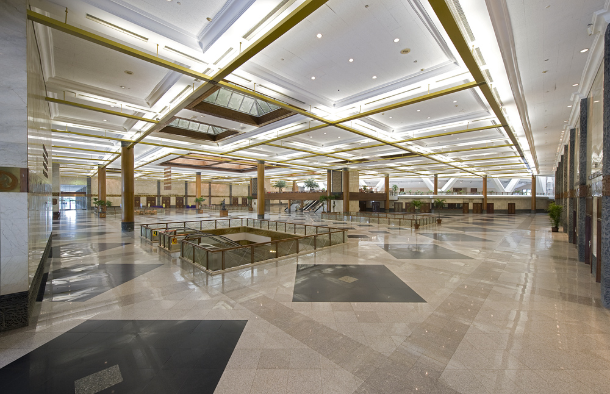
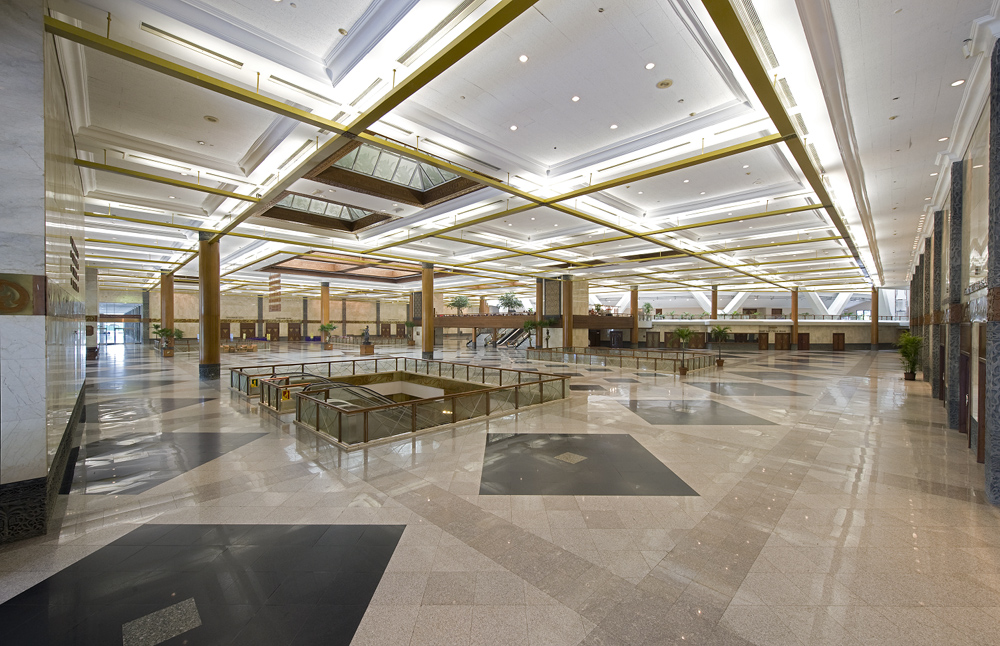
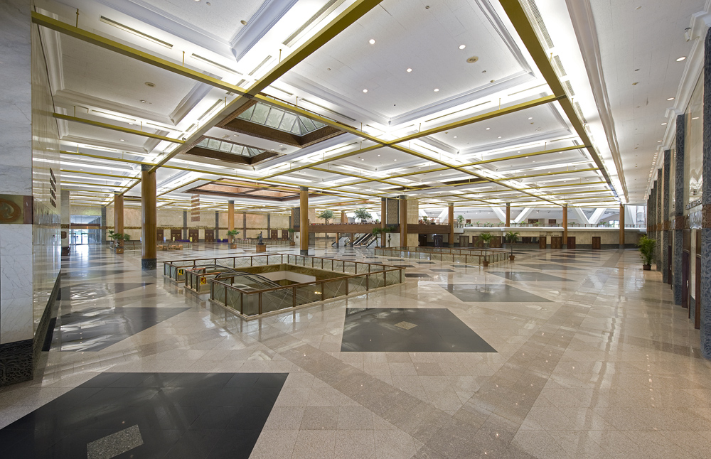

Jockey's Convention Center was built in 1960 and completed in 1974 for the opening ceremony of the 23rd annual conference of the Pacific Asia Travel Association (PATA) held in early April 1974. The conference was a major event for Jakarta and several major hotel projects, such as the expansion of Hotel Indonesia, Borobudur Hotel, Hotel Ambassador (now Aryaduta Hotel), and Hotel Sahid Jaya, are also targeted to be completed before the PATA conference begins. Since then, Jockey's Convention Center has held many national and international conference, exhibition, fair, indoor sports, and musical concerts.
Strategically located in the heart of Jakarta, Jockey's Convention Center hosts events for the world's political, business, and entertainment leaders. Our previous engagements have included world conventions, regional conferences, theatrical performances, jazz festivals, concerts, fashion shows, product launches, business meetings and banquets. We have been delighted to work with presidents, CEOs, and international musicians, as well as companies from almost all industries. Located under one roof, our facilities include extensive exhibition, event, and meeting spaces; with state of the art sound, lighting, and communication facilities, and Ethernet access throughout. To help design and direct events, our dedicated Convention and Exhibition Services Managers guide customers through each step of their projects professionally.
